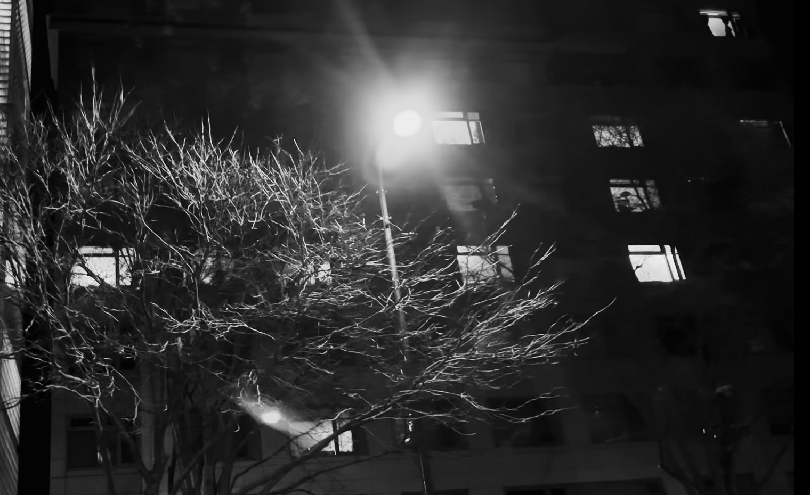
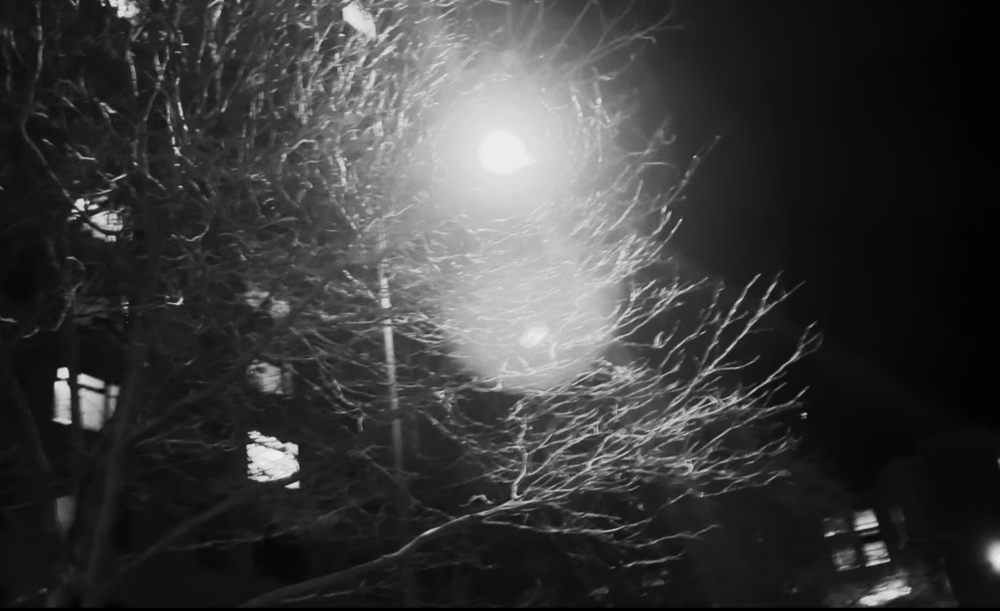

The light tries to enter the long black branches
Thinking about a streetlight’s wooden halo
Monday, November 27, 2023 · 2 min read
Have you noticed the way streetlights shine through the bare branches of trees on cold winter nights? Walking home from work tonight I was struck by the almost overwhelming beauty of the scene. The light creates a perfect, glittering halo around itself, like the moon in a Van Gogh painting. The tree in turn all but reaches its fingers out to grasp the light. If you move your head from side to side, it feels as if a wormhole has opened in the tree, sucking the branches into the light’s force field.
I think this happens because of the Fresnel effect. If the light hits a branch at just the exact angle, the wood (like many other materials in the world) becomes unexpectedly shiny. In the bramble that hang off of a tree’s bare branch, the only twigs that catch the light’s glint are the ones that make a specific shallow angle with your eye. By radial symmetry, it’s not hard to see that this should result in a glowing circular halo. It’s similar to how divers see a circular window on the surface of the water when they look up, or the 22º halo you sometimes see around the sun — but here the medium is wood, not water.
If you live in a place that has seasons, I encourage you to go and see this effect for yourself. It’s a hard phenomenon to capture on camera — it requires high dynamic range, high-resolution video, and patience outdoors when it’s cold and dark. For now, here is the best I could do with my old iPhone. (I stabilized the light with a little Python script.)
For comparison, here are two frames from this video:

